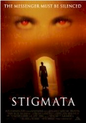
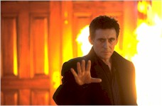
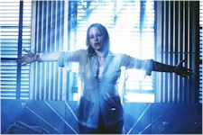

Contents | Features | Reviews | Books | Archives | Store |
 |
|
| Movie Credits | Buy It! |
Stigmata
Review by Gregory Avery
Posted 17 September 1999
|  |
Directed by Rupert Wainwright. Starring
Patricia Arquette, Screenplay
by Tom Lazarus and Rick Ramage |
In
Stigmata, Patricia Arquette plays Frankie Paige, a scrawny young thing,
working as a hairdresser in Pittsburgh, who suddenly begins experiencing
violent, disconcerting spells of hallucination, combined with manifestations of
stigmata -- the wounds suffered by Christ while on the cross. A Vatican envoy,
Father Kiernan (Gabriel Byrne), speedily arrives at her door, to find out that,
not only does Frankie not attend church, but she -- whoops! -- doesn't believe
in a Higher Being. Then she starts writing things in Aramaic, one of the arcane
languages used to write the Gospels, and speaking in voices not her own. Will
Frankie say or do something that could shake the very roots of Christian
theology and threaten Western civilization as we know it?
In
case you've been in Nepal, we're on the verge of getting a lot of "the end
is nigh" movies during the months to come, ranging from the ensemble drama Last
Night to big-budget Hollywood stuff: Winona Ryder is set to get all worried
and fretful in Lost Souls, while Das Schwarzenegger is going to star in
something called End of Days, which already has the distinction of having
the most hideous advance one-sheet poster I've seen in years. Stigmata,
which was originally to have appeared in theaters last spring, is now poised in
the unenviable position of sounding the clarion call for these other movies, but
it turns out to have other things on its mind.
The picture has a
workable idea -- what would happen if a completely unreligious person began having intense, even ecstatic, religious visions
and experiences -- and the material, or the original version of it, seems to
have brought out some of the best in its performers. Patricia Arquette is warm,
soft, shyly inviting and ingenuous, while Gabriel Byrne gives one of his most
relaxed, confident performances in years.
But
after an adrenaline-charged first half, the second half gradually begins to
disassemble-- characters are misplaced, plot references are left hanging, and the
movie gets addle-headed, as if it can't decide what it wants to be. (At one
point, it turns into a garden-variety exorcist movie, for a while.) The
Aramaic scribings turn out to be part of a scriptural message, which suggests,
for one thing, that organized religion may be superfluous to the practice of
faith. It would have been nice to have found out something more about what it
said, but one senses that the story is actually more about what happens to the
two main characters who are thrown together by these circumstances. Yet every
time it looks like we're about to learn something more about them, and we lean
forward to find out what it is, Arquette is pitched into writing and thrashing
about, and the screen becomes swamped with rapid-fire images and
digitally-enhanced noise. (The original music score, by Billy Corgan, Elia
Cmiral, and Mike Garson, is anything but noise, though.)
The
fate of Frankie and Father Kiernan is finally left vague and in limbo -- we
don't find out what all this pounding and yammering on Frankie ends up meaning
to her, or whether she even remains an atheist or not, while Father Kiernan is
left, literally, sitting on his hands. That's a little better than what happens
to Rade Sherbedgia, the talented Yugoslavian actor whose character, a benevolent
but renegade priest, has been snipped away to nothing during one of the film's
trips to the editing room.
If this film is about anything, it's water. This is the wettest-looking movie I've seen since Blade Runner: Pittsburgh is shown under a perpetual deluge of rainfall, and it doesn't stop there. Frankie's apartment leaks (sometimes upwards); and there's a gorgeous double-reflection effect of her body submerged in an old-style bathtub. (One of the only times the photography, by Jeffrey L. Kimball, doesn't emulate the dark, burnt quality that seems to have become all the rage since Mike Figgis used super-16 mm. to film Leaving Las Vegas.) Persons attending Stigmata may be advised to take an umbrella.
Contents | Features | Reviews
| Books | Archives | Store
Copyright © 1999 by Nitrate Productions, Inc. All
Rights Reserved.